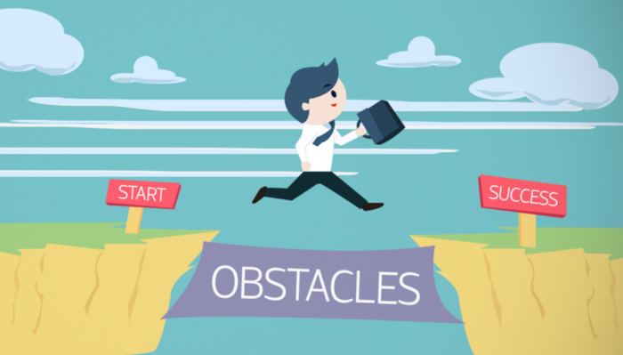
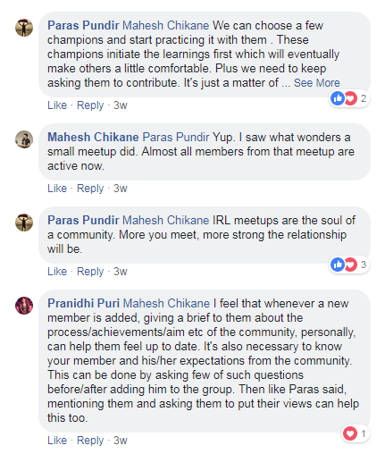
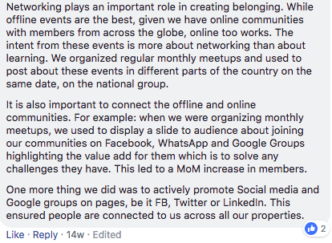
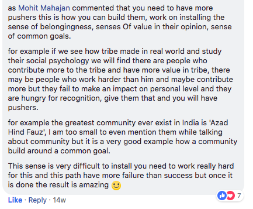
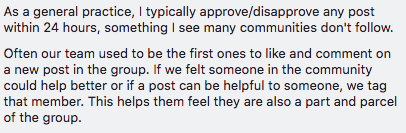

13 major challenges faced while building a community | Experts’ Roundup
There are a lot of challenges one faces while building a community. Some can be serious enough to slow down the growth of a community. But do we ever list them out and try to find their solutions?

Utkarsh Singh Bhardwaj, one of our community members, brought this out and asked the toughest challenge one faces while growing a community.
Therefore, after a great discussion, we came out with the following points where all the community experts discussed the challenges they faced while building their communities-
1. Lack of Motivation- Taking up the challenges to run/grow the community is easy, but to actually continue the pace/dedication/motivation to do so is the most difficult part. — by Milan Singh Thakur Quite a few times it happens that we lose the pace with which we were moving in the beginning thus creating a communication gap with the community members and getting off the track.
2. Content Experiments— Getting people to engage with each other through a good content and fire up discussions is an ice-breaker. If we get a clarity on the type of content which users look for, we can overcome a big challenge. Many a time as a community manager, we face inertia in trying different types of content. Sometimes we keep posting a certain type of content thinking that only this works, but a variety triggers a lot of reactions and some content may come out winning. Thus, experimenting and getting a clarity on the type of users and their need, helps. - by Pranidhi Puri, Puneet Aggarwal, Mahaveer Muttha
3. Member Generated Engagement- There is a need to concentrate on the interactions between community members for its growth and strengthening. It’s important to identify the unique thinkers who want to make a difference where they mingle with other’s members’ ideas and create an impact on the discussions through capacity building. Also, having the brainstorming and ice-breaking sessions to solve the problems of the community platform create solutions for that problem too. — by Abhinaya Bharadhwaj
4. Member’s active participation- If growing a community is hard, finding first 10 daily active users that don’t need any prodding is 100x tougher in my experience. — by Anuj Adhiya A new member generally doesn’t participate because of hesitation or less awareness about the importance of the community. Making the new members comfortable in the group is a challenge, said Pranidhi. According to Asha Chaudhry, to get the new users contribute in a meaningful way (apart from newbie contests) and to grow the number of power users, few hacks are to use easy CTA posts, question of the day, opinion polls on topics close to the TA’s heart or to revisit a newcomer’s first query. This clearly shows the intent of the community — which is to help & support GENUINELY. Utkarsh Singh Bhardwaj added that if we have a fair knowledge of community crowd’s interest, we could always diversify our content so that everyone, in some or the other post becomes a part of the discussion! Also, keeping interns as a dedicated resource for content research is the best way to tackle this. — Asha Chaudhry

5. Dedicated Team & Leadership — A good dedicated team is required to run any community where tasks can be delegated to multiple resources. Though community manager is called the one-man army, getting everything done by the same person delays the flow of the whole process.- Pranidhi Puri Therefore, the team should be capable enough to take up all the challenges and the bonding among the team members should be strong, added Mahaveer Muttha.
6. Consistency- Being consistent with the content is a great challenge. Once we start building useful content for the members, a curiosity among them generates. Like for example- Initially in any community, participation is less in the beginning. But when the posting of content becomes regular, the engagement increases automatically. Members start generating curiosity towards upcoming content and learning. — Pranidhi Puri Not just in social media but consistent engagement and delivering values are required in other aspects too. For example, when we speak about community from a co-working perspective where the personas and needs are rather diverse, it requires consistent fact-finding, experimenting and tracking the value/engagement to deliver it.- Mithun Shetty, Avani Parekh
7. Maintaining the Personal Touch & Uniqueness in the Community- Community is not a commodity. It consists of unique people who can be bound by a common feature to a certain extent but otherwise differ in behavior. So, customizing to various level of needs is a challenge. As the community scales, it becomes a challenge to balance personal touch and standard norms. by Priya Sood Also, members can become inactive at any time. As the number of members increases, acknowledging the feedback of each of them becomes a big job- Pranidhi Puri
8. Monetisation model for a community- Another problem is to find a way to monetize the community. Nobody starts a community to make it a full-time pursuit, but to find a way and manage processes around is a challenge that differs community to community. — Teja Bitra
9. Knowing members beyond online channels- It is not so easy to bring people together offline because it is necessary to build the trust among the members and towards the brand to get them together.- Pranidhi Puri According to Teja Bitra, it’s difficult to bring people during initial days. He has tried several techniques like tech seminars, group discussions, spot quizzes etc. Then he followed Seth Godin’s Minimum Viable Audience concept which focuses more on quality than quantity. Since then, he cared less about numbers and tried to make human connections.
According to Venkatrangan Gokul -

10. Building a sense of belonging among members — As Arbab Usmani said, the toughest challenge for any community builder is psychological and generally, the community leaders refuse to accept this because somewhere it hits their ego. Also, this path has more failure than success and the biggest challenge here is to install “ the sense of the community” in their members.

Venkatrangan Gokul added that creating a sense of belongingness automatically brings in engagement. It’s sometimes more than just posting relevant content, as it may also turn into a one-way broadcast. It’s more about appealing emotionally and creating a relationship. Also, about being recognized for their contributions.
11. Finding relevant people with a common goal— While adding new members, one challenge is to find relevant people with interests that align with the community. Deepak Sahoo tries solving this by contacting people on LinkedIn (not really effective), and by asking active members to refer their like-minded friends (slightly more effective). Another way is to ensure that your content and activities are visible on public feeds where people can discover your community. For example- recurring meet-ups, event listings, posting content on popular forums etc.
12. Facing market competition- According to Manmeet Singh, capturing the same market which has already been captured by other companies is a real challenge. For example: If an app wants to capture musically’s market, it has to go through the already existing apps like clip, vigo, tiktok etc who have already stepped into short video community. Therefore, it’s necessary to go unique in order to capture the already captured market.
13. Find Moderators- The toughest part is to get more pushers. Nowadays, community builders get so busy focussing on current pushers that they overlook prospective pushers who can run the community in the right direction. — Mohit Mahajan
Thus, finding solutions to the challenges is the only way to grow your community in a healthy direction. These were the points which summarise the discussion happened in our group. The members who have shared their views are themselves the Community Builders. They have achieved these benefits while building their respective communities. We would like to thank all of them for sharing these valuable community learnings. And a special mention to Pranidhi Puri who has put down these points and made it a successful blog.

About The Author
Community Manager | Tech Evangelist | Story-teller | People Person